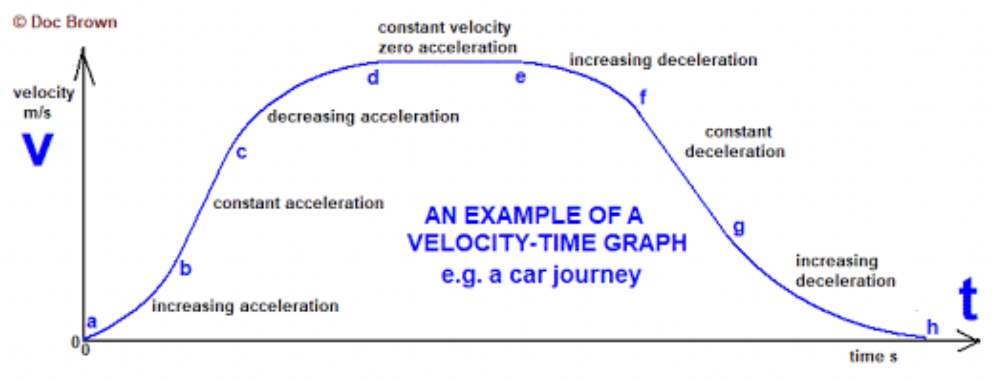

01-21-2021 to 05-24-2021 ~ Girvin Djapardi
Common Misconceptions in IGCSE Physics

I made a very detailed blog post on common misconceptions in Chemistry which I see brought up again and again. Do check that out!
Alright, without further ado, let us get started.
Motion
Today, we will be looking at motion. The first common misconception is with respect to this question:
Explain why do objects in constant speed around a circle experience acceleration.
Students find it bizarre or impossible that an object in constant speed can accelerate. Well, here's the thing. Speed and velocity are different quantities. The latter is a vector quantity which means the direction is taken into account. If we talk about speed, it does not matter if it travels 50km/h North or South but in velocity, the direction matters.

Source: DocBrownPhysics
Hence, with this being said, we can logically conclude that when an object is in a circular motion, its direction is always changing. Hence, if direction changes, we can conclude its velocity is also always changing. Ultimately, a change in velocity will also result in acceleration.
Another extremely common misconception is this:
Students often assume that if acceleration is decreasing, the object is slowing down. This is absolutely false. Take note of the terms. The object is still accelerating but just the magnitude of the acceleration is decreasing. An example is shown below.
Velocity of a car(km/h) :
5 , 20, 30, 35, 38, 39
Notice how the velocity is still increasing but at each interval, the amount it increases by is getting smaller. This is what is meant by a decrease in acceleration.
Alright, guys. That is it for Part 1 on Common IGCSE Physics Misconceptions. See you guys next time!
Difference between boiling and evaporation.
I have seen this concept be awfully 'memorized' over the past 2 years. In all honesty, there is no point in memorizing it. Understanding is crucial.
The one thing to first get a grip on is that boiling takes place at one fixed temperature. This is why we have boiling point as a term. On the other hand, evaporation can take place over a range of temperatures and per logic, this is why we do not have a term called evaporation point.
With this in mind, let us take a look at the differences. For each, I will demonstrate how passive memorization is not required.
1) Boiling takes place throughout the liquid whereas evaporation takes place only at the surface. If you boiled water before, you will see at its boiling point, the entire body of water starts bubbling and 'shaking' in its own place.
2) During boiling, the temperature of the body of water stays constant. The reason behind is simple. When the state of the object is about to go from liquid to gas, we know that energy needs to be supplied. Here, all the energy supplied is being absorbed and this energy is used to break the intermolecular forces. We know that an increase in temperature means the average kinetic energy is increasing. However, we are not trying to increase the kinetic energy. What we need is to break the intermolecular force and hence, all energy is being used up for this purpose.
3) Evaporation has a cooling effect. How so? Well, we know that when evaporation occurs, the liquid turns into vapor and leaves as gas. This is because, on the surface of the liquid itself, molecules with more amount of energy are able to break the intermolecular force. When it breaks this force, it can leave as gas. Now, we apply logic. The only reason why only selected molecules leave as gas is that it has more amount of energy. Now, if the molecules with more amount of energy leave the system, this means that the system has an overall reduction in total energy. This is why when we leave the pool after a swim, despite the hot weather, we feel very cold.
And that's it! Do keep in mind this particular concept as this is always asked every year. Stay tuned for part 3!
Understanding equations(formulas) and units.
(Formulas are basically equations that describes a rule or relationship)
I find this an issue for most people as usually, equations are just being memorized. This is also true for definitions.
A lot of students do not understand how the formulas in Physics are very much connected. Take an example of 2 formulas for force.
ㅤㅤF = rate of change of momentum
ㅤㅤF = mass x acceleration
Fact is, we can derive the latter equation from the prior equation only if mass is constant(which is the case for highschool physics so yea, it is always true for now).
But do take note that despite being different equations, when you sub the units in, both give kgm/s^2.
It is rather rare to find students first understand the equation and then memorizing it. What happens is that students 'think' that certain equations can only be used for certain questions and they 'memorize the solution.' This is incredibly false.
I first came into realization of this when I took my Physics exam in Sec-3. I was rechecking my answers and when I played around with the equations and values, I realize how interconnected these equations are. Although a specific equation may be faster in solving a particular problem, other equations are also very much viable.
Now, does this really help with IGCSE Physics? Honestly, not really. During exams, you are under pressure and hence, are most likely to use the equations your most familiar with and from root memory, process solutions based from past papers you have done.
However, it WILL help if you plan to take a course that requires a strong foundation in Physics. I cannot stress enough this enough. Being able to make connections with a variety of formulas not only helps you tackle god-level Physics problems in the future and also, strictly exam-speaking, helps with definitions. An example would be pressure. Per the formula, it is force per unit area.
Something like that. Do remember that future Physics problems would not only have you find the change in momentum in part A and they give you time and have you find the force(IGCSE favourite definitely) in part B.
And yea, that's basically it. I do apologize as this is not really a misconception. However, with the amount of memorization I have seen lately, I feel the need to address this.
Heat Transfer
For today's misconception, we would be tackling the 3 ways heat can be transferred. This would be rather silly but I still see a lot of confusion about this.
First of all, I would like to reinforce the idea that conduction and convection require a medium whereas radiation does not. This is why it is possible for us to feel the heat emitted by the sun, which is approximate 1 astronomical unit away from us.
Now, the understanding of these concepts is important, especially for scientific investigations and your paper 4. Being able to understand that decreasing surface area decreases the rate of heat transfer due to convection but not radiation is crucial in answering the trickier questions.
A thing that often gets misunderstood by students is the idea of convection currents. Please remember that convection currents work due to the difference in temperature in 2 regions, causing hot air to rise and cold air to fall. Don't want to memorize that. Take a look at this logic.
We know that density is equal to mass per unit volume. When we heat up a substance, its mass would always remain constant but its volume will increase as it expands. If mass stays constant and volume increases, density subsequently decreases. Hence, we know that less dense objects will float. This explains why hot air rises.
Along the same lines, convection currents work in an upward-downward fashion. What do I mean by this? Say you place your hand on top of a fire 5 cm above. You will feel some sort of heat. Repeat this process but instead of 5cm above, do it 5cm away. You will feel considerably less heat. This is due to how convection currents work. If you were to imagine this current trapped in a cylinder, it would have a small base area but a large height.
Now, why does this matter?
Say you are being asked if a fire in point X and you are sitting 5m aways and yet you still feel its warmth, what type of heat transfer is being involved. A lot of students choose convection and radiation. This is false as per the discussion above, only radiation would play a part.
Another important thing is with respect to radiation. We know that glossy surfaces would be good reflectors and dull would be bad reflectors. However, it is extremely important to understand that in Physics, there is no such thing as a good absorber but a poor emitter or a good emitter but a poor absorber.
If a material is a good emitter, it is automatically also a good absorber. Now, obviously, the explanation behind it is definitely advanced. Sadly, I never had a chance to ask my teacher. However, the way my logic works is that it ties back to Newton's 3rd Law.
Action=(-)Reaction
If a material were to absorb x amount of heat, it should also be able to emit x amount of heat. Vice versa is true.
This concept is useful when we are asked questions based upon minimizing heat loss or determining which material is a better material experimentally. In some cases, it is much easier to record data where it involves an object gaining heat. However, since we know that a good absorber(gains heat easily) is also a good emitter, we can make conclusions based on the data we have collected.
And that is it, guys! If you have any questions, feel free to ask them down in the comment section down below! See you guys next time.